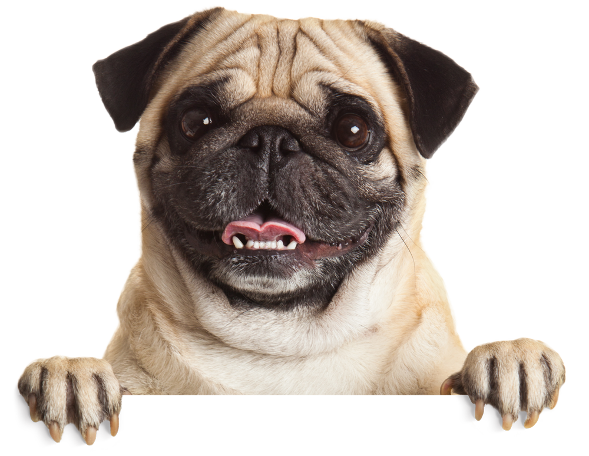

CLÍNICA DO PUG DOIDO

A clínica veterinária do Pug doido oferece serviço básico ao seu pet. Tais como consultas,
radiografia, ultrassom, acupuntura e fisioterapia. Além de contar com a parte de estética,
seriam banho e tosa.